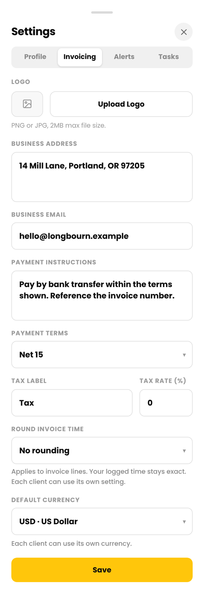
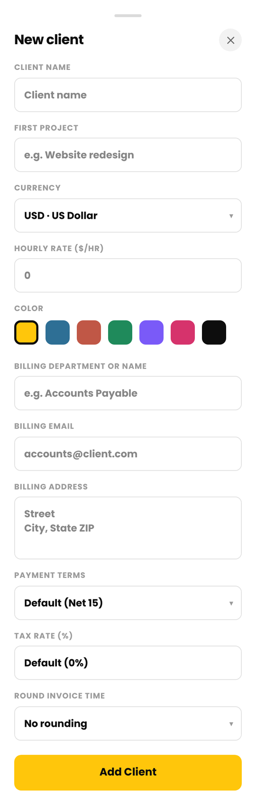
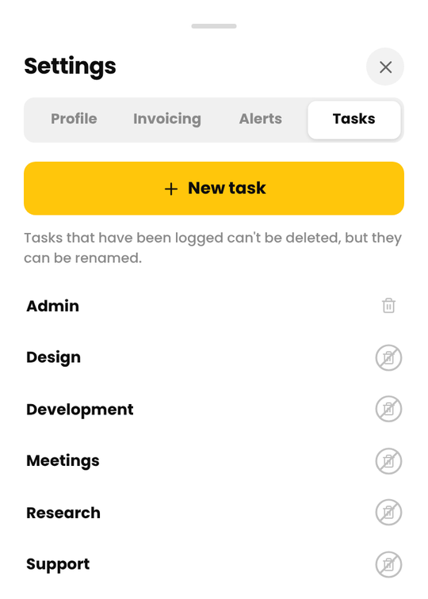
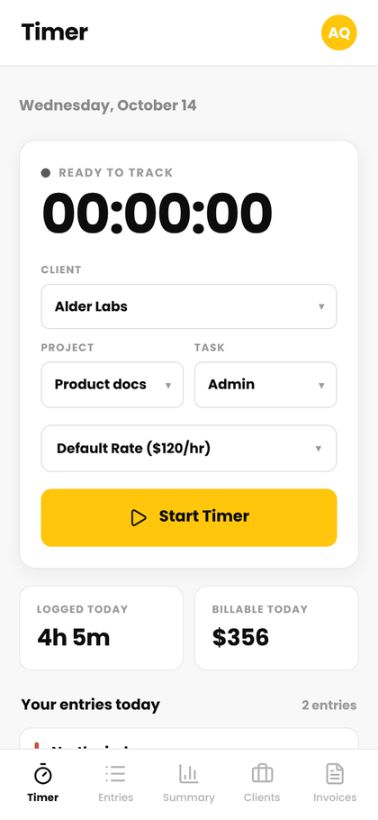
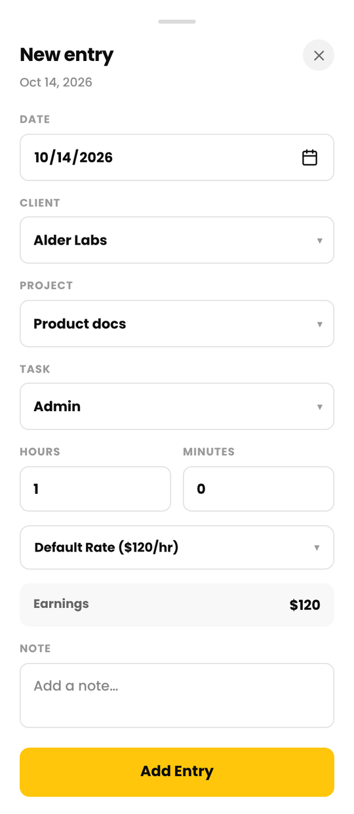
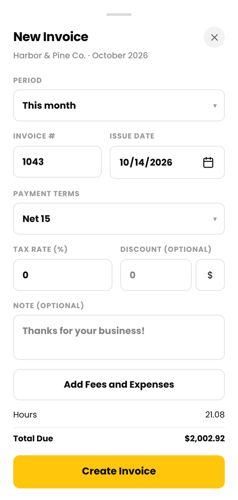
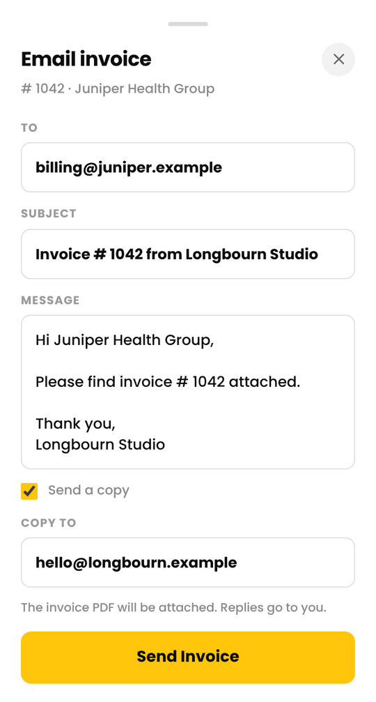

Get started with Cruxy
Cruxy tracks your time and turns it into invoices. Setup takes about five minutes.
Updated
Create your account
- Go to get.cruxy.io/signup.
- Enter your first name, last name, email and a password (at least 6 characters). Add your business or agency name if you like. We use your name if you leave it blank.
- Tick the box to agree to the Terms and Privacy Policy.
- Tap Create Account.
- If we ask you to confirm your email, open the message we sent, tap the link, then sign in.
Cruxy is free to start. You don't need a credit card.
You can use Cruxy on the web at get.cruxy.io, or install it on your phone so it opens like an app. See Install Cruxy on your phone.
Add your business details
Tap your avatar in the top right, then Settings. Choose the Invoicing tab and fill in:
- Your business address and email, which appear on your invoices
- Payment instructions, such as bank details or a payment link
- Your default payment terms: Due on receipt, Net 15, Net 30, Net 45 or Net 60
- Your tax label and rate, if you charge tax
- A logo (PNG or JPG, up to 2 MB), if you want one
Tap Save. You can change any of this later. Changes apply to invoices you create afterward, not ones you've already made. Each client can also have its own payment terms and tax rate.

Add your first client
- Tap Clients, then New.
- Enter the client's name and a first project, for example "Website redesign".
- Choose a currency and enter your hourly rate. A rate of 0 makes the client non-billable.
- Pick a color, then tap Add Client.
To send invoices by email, add a billing email. Tap the client, then the yellow pencil next to the name to open the details.

Check your tasks
A task says what kind of work you did, like Design or Meetings. Tasks live in Settings, not on each client. Tap your avatar, then Settings, then the Tasks tab. Every client uses the same list.
We start you with six: Admin, Design, Development, Meetings, Research and Support. Tap New task to add your own.
Once a task is on an entry, it can't be deleted, but you can rename it.

Log your first time
With the timer
- Tap Timer and pick the client, project and task.
- Tap Start Timer. Tap Pause if you take a break.
- Tap Stop & Log when you're done. The time is saved as an entry, rounded to the nearest minute.
By hand
Tap Entries, then New, then Time Entry. Enter the date, hours and minutes.


Send your first invoice
- Tap Clients, then the client, then the Invoices tab.
- Tap New Invoice and choose the period. It starts on all unbilled.
- Check the invoice number, dates and terms. Add a discount or a note if you need one, and untick any fees you want to leave off.
- Tap Create Invoice.
- Tap the email icon to send it as a PDF. You can also tap Share or Download and send it yourself.
Free includes 3 emailed invoices or reminders a month. Sharing and downloading are always free. When you email or share an invoice, Cruxy marks it as sent.

